This assignment 2 is mainly concerned of Internet of Things, where Arduino has been used instead
of Industrial Micro-controller to control the temperature of the Air heater. The PID controller has been
implemented inside the Arduino to get into setpoint temperature and Low pass filter has been used to cut off unwanted
noises from the signal. Besides controlling the temperature of the air heater, the data has also been stored in the cloud
(Thingspeak) to analyse and monitor the data in real-time. This report will go through every component, that has been used
to make this system work.
In this project, the PI controller has been implemented in Arduino to control the temperature, where the controlling signal is coming from the Air Heater itself. The signal is then passed through PI controller to reach to its setpoint
in Arduino and Arduino sends it as PWM. AS the Arduino does not have Analog Out, the signal had to be converted to Analog. To make the PWM more smooth, Low Pass Filter has been used. The output signal from the PI controller
has to be sent to the Air Heater using DAC chip MCP4XXX to convert it into Analog Signal, as the Arduino does not have Analog Out Signal, rather it gives out PWM signal.
Moreover, all the signal is stored in the cloud (ThingSpeak) by using Wi-fi Shield. The Wi-fi Shield let Arduino connects to the available wifi using SSD name and Password, and then using Read API found from the Thingspeak, Arduino
gets connected to the server and save data.
Before we implement this system in real Air Heater, the system has been tested using LabView and USB DAQ 6008.
Arduino
Arduino is an open-source electronics platform based on easy-to-use hardware and software. Arduino boards are able to read inputs - light on a sensor, a finger on a button, or a Twitter message - and turn it into an output - activating
a motor, turning on an LED, publishing something online. You can tell your board what to do by sending a set of instructions to the micro-controller on the board. To do so you use the Arduino programming language (based on
Wiring), and the Arduino Software (IDE), based on Processing.
Library
Libraries are files written in C or C++ (.c, .cpp) which provide sketches with extra functionality (e.g. the ability to control an LED matrix, or read an encoder, etc.).
Library consists of at least two files: a header file (w/ the extension .h) and the source file (w/ extension .cpp) . The header file has definitions for the library: basically a listing of everything
that's inside; while the source file has the actual code.
In this task, two library files has been made, one is for Low Pass Filter , and other one is for PID controller. Besides that, we have used Wifi and Thingspeak library.
Low Pass Filter
A low-pass filter (LPF) is a filter that passes signals with a frequency lower than a selected cutoff frequency and attenuates signals with frequencies higher than the cutoff frequency.
PID Controller
A PID controller is a three-term controller that has proportional, integral and derivative control coefficients. It is named after its three correcting terms and its sum produce a control action for manipulating variable. It measures
the output of a process and controls the input by maintaining the output at a desired value (also called as set point). The most common example of PID controller is controlling temperature in many industrial applications.
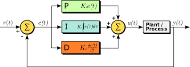
Figure 2:PID Controller
P-Controller
Proportional or P- controller gives an output that is proportional to current error e (t). It compares the desired or set point with the actual value or feedback process value. The resulting error is multiplied with a proportional constant to get the
output. If the error value is zero, then this controller output is zero.
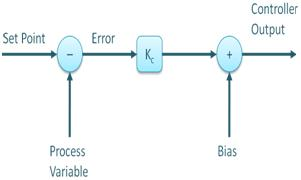
Figure 3: P-Controller
P-controller P-controller This controller requires biasing or manual reset when used alone. This is because it never reaches the steady-state condition. It provides stable operation but always maintains the steady-state error. The speed of the response
is increased when the proportional constant Kc increases.
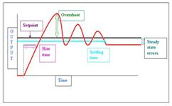
Figure 4: P-Controller Frequency Response Analysis
I-Controller
Due to the limitation of p-controller where there always exists an offset between the process variable and setpoint, I-controller is needed, which provides necessary action to eliminate the steady-state error. It integrates the error over a period of
time until the error value reaches zero. It holds the value to the final control device at which error becomes zero.
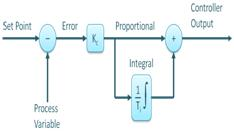
Figure 5:PI-Controller
Integral control decreases its output when a negative error takes place. It limits the speed of response and affects the stability of the system. The speed of the response is increased by decreasing integral gain, Ki. In the bottom figure, as the gain
of the I-controller decreases, the steady-state error also goes on decreasing. For most of the cases, the PI controller is used particularly where the high-speed response is not required. While using the PI controller,
I-controller output is limited to somewhat range to overcome the integral wind up conditions where the integral output goes on increasing even at zero error state, due to non-linearities in the plant.
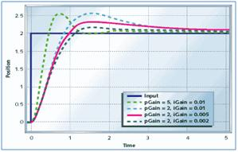
Figure 6: PI-Controller Frequency Response Analysis
D-Controller
I-controller doesn’t have the capability to predict the future behavior of error. So it reacts normally once the setpoint is changed. D-controller overcomes this problem by anticipating the future behavior of the error. Its output depends on the rate
of change of error with respect to time, multiplied by derivative constant. It gives the kick start for the output thereby increasing system response.
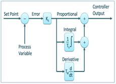
Figure 7: PID-Controller
So finally we observed that by combining these three controllers, we can get the desired response for the system. Different manufacturers design different PID algorithms.
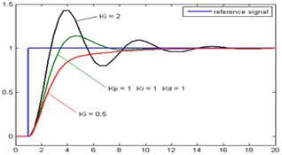
Figure 8: PID-Controller Frequency Response Analysis
Pulse Width Modulation
Pulse Width Modulation, or PWM, is a technique for getting analog results with digital means. Digital control is used to create a square wave, a signal switched between on and off. This on-off pattern can simulate voltages in between
the full Vcc of the board (e.g., 5 V on Uno, 3.3 V on a MKR board) and off (0 Volts) by changing the portion of the time the signal spends on versus the time that the signal spends off. The duration of "on time" is called the
pulse width. To get varying analog values, you change, or modulate, that pulse width.
Arduino does not have Analog Output Signal, but rather it gives out only Digital Output. That is the reason, PWM signal will be used in this project. As, the PWM can vary really fast, it can act as an analog signal. To make it
more smooth, Low Pass filter has been used to smoothen the signal.
DAQ
Alternatively, DAQ has been used to convert digital signal to analog signal and then pass it to the Air Heater. In this project, MCP4XXX has been used. It changes the signal to the analog signal.
Wi-fi Shield
The Arduino WiFi Shield allows an Arduino board to connect to the internet using the 802.11 wireless specification (WiFi). It is based on the HDG204 Wireless LAN 802.11b/g System in-Package. An AT32UC3 provides a network (IP) stack
capable of both TCP and UDP. Use the WiFI library to write sketches which connect to the internet using the shield. The WiFI shield connects to an Arduino board using long wire-wrap headers which extend through the shield.
This keeps the pin layout intact and allows another shield to be stacked on top.
The WiFi Shield can connect to wireless networks which operate according to the 802.11b and 802.11g specifications. There is an onboard micro-SD card slot, which can be used to store files for serving over the network. It is compatible
with the Arduino Uno and Mega. The onboard microSD card reader is accessible through the SD Library. When working with this library, SS is on Pin 4. Arduino communicates with both the Wifi shield's processor and SD card using
the SPI bus (through the ICSP header). This is on digital pins 11, 12, and 13 on the Uno and pins 50, 51, and 52 on the Mega. On both boards, pin 10 is used to select the HDG204 and pin 4 for the SD card. These pins cannot
be used for general I/O. On the Mega, the hardware SS pin, 53, is not used to select either the HDG204 or the SD card, but it must be kept as an output or the SPI interface won't work. Digital pin 7 is used as a handshake pin
between the WiFi shield and the Arduino, and should not be used. [1]
Cloud
"The cloud" refers to servers that are accessed over the Internet, and the software and databases that run on those servers. Cloud servers are located in data centers all over the world. By using cloud computing, users and companies
don't have to manage physical servers themselves or run software applications on their own machines. [2]
API
An application programming interface (API) is a computing interface which defines interactions between multiple software intermediaries. It defines the kinds of calls or requests that can be made, how to make them, the data formats
that should be used, the conventions to follow, etc. It can also provide extension mechanisms so that users can extend existing functionality in various ways and to varying degrees.An API can be entirely custom, specific to
a component, or it can be designed based on an industry-standard to ensure interoperability. Through information hiding, APIs enable modular programming, which allows users to use the interface independently of the implementation.
[3]
Cyber Security
Cybersecurity is the practice of protecting systems, networks, and programs from digital attacks. These cyber-attacks are usually aimed at accessing, changing, or destroying sensitive information, extorting money from users, or
interrupting normal business processes. Different types of Cyber Security threats:
Ransomware
Malware
Social engineering
Malware
Phishing
To be secured:
Passwords
Firewall
Antivirus and anti-malware software
Access control
VPN
Wi-Fi Network can be used
Security is Crucial
Maintaining a high level of security is critical when transporting the data around the IoT network. Information transmitted through this network can be anything from temperature sensor data in production machines to patient data
recorded by X-ray machines in hospitals. Business-critical information is often collected and reported in a central database located somewhere in the cloud or a local data center. When we have IoT devices containing so much
sensitive data, security is absolutely essential for developers who want to take advantage of the benefits offered by IoT technology.
Our Security
Over here, REST API was used to send data from Arduino to Cloud. As, the key is the secret unique code, it needed to be saved securerly, which it can only be used to access data in the cloud. Moreover, the API can be generated
every month on ThingSpeak, which make sure that even if anyone had access to it, it cannot be used anymore.
Methods
PID Controller
PI controller has been implemented in the system, where the I controller has a major disadvantage which is these are quite unstable. The reason behind this is that integral controllers show somewhat slow response towards the produced
error. However, the major advantage concerning the proportional controller is that these are designed in a way by which steady-state error gets reduced significantly thereby making the system more stable. This is the reason
the two are combinedly used to produce a type of controller which provides highly stable results.; but its main advantage is that it reduces steady-state error drastically.
The program takes setpoint temperature, Real temperature, Kp, Ki and and Ts as a parameter. Then it finds out the error, which then adds it to find out the integral error, that has been bound from -1 to 1. Later, it finds the output
signal and then output the signal.
Figure 9: PI-Controller Header
Figure 10: PI-Controller Cpp
LowPass Filter
Passive Low Pass filter has been made using 10 microFarad capacitor and 3.9 kiloOHM resistor which has been connected to Arduino before passing signal to Air Heater from Arduino.
Moreover, Low Pass Filter Library has also been created in the Arduino to cutoff frequency after processing signal from PID controller and to PWM. First, the cutoff frequency has been found using the calculator and then MATLAB
has been used to find the transfer function and then converted to discrete time transfer function. Upon that, the equation has been made out of it, which has been implemented in Low Pass Filter.
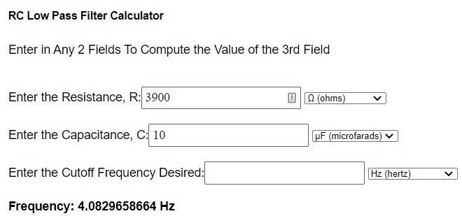
Figure 11: Cutoff Frequency
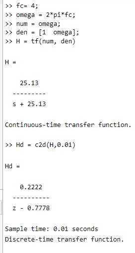
Figure 12: Matlab Code Discrete Time Transfer Function
Figure 13: Lowpass Cpp
Figure 14: Lowpass Header
Upgrading the Firmware of Wifi Shield
Wifi Shield has to be connected through Micro USB to computer detaching from Arduino Uno. Both pins at J3 has to shorted using given jumper. Usin Flip package from Atmel. Wifi_dnld.elf and WifiHD.elf files had been download and been saved into C:/ Opening the command prompt in windows.
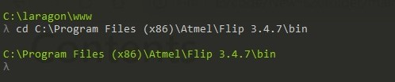
Figure 15: Command 1
then the below command had to executed
Figure 16: Command 2
Once the command was executed, then this command had to be executed
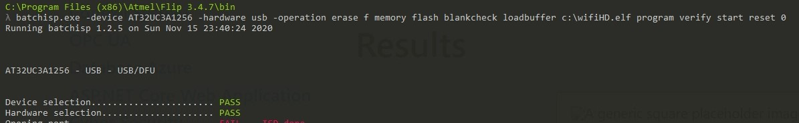
Figure 17: Result
Arduino Program
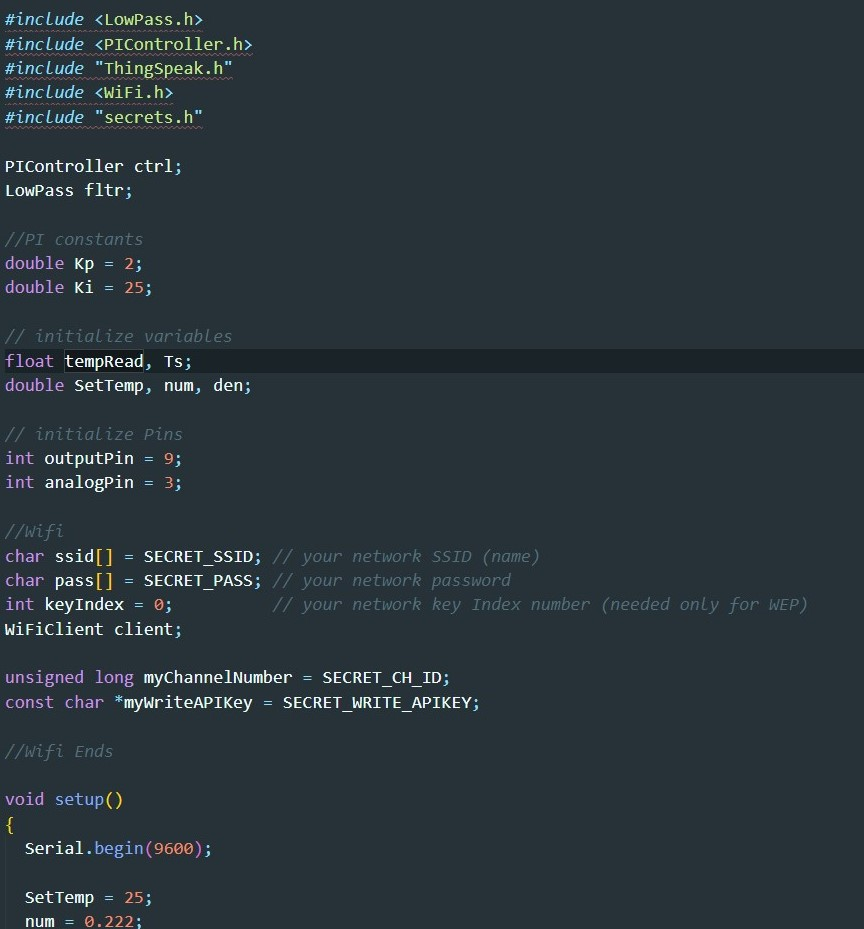
Figure 18: Arduino Program
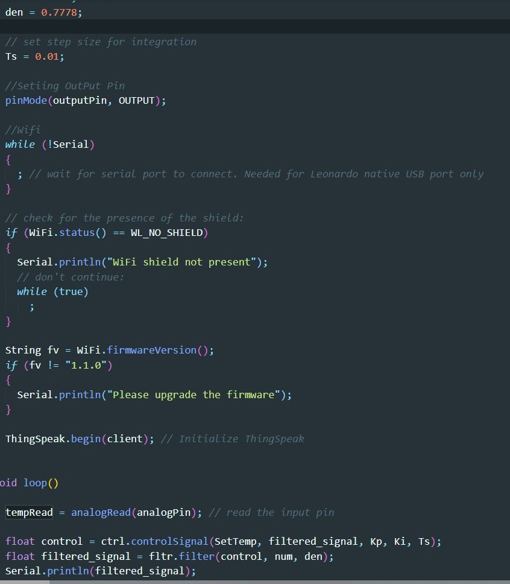
Figure 19: Arduino Program
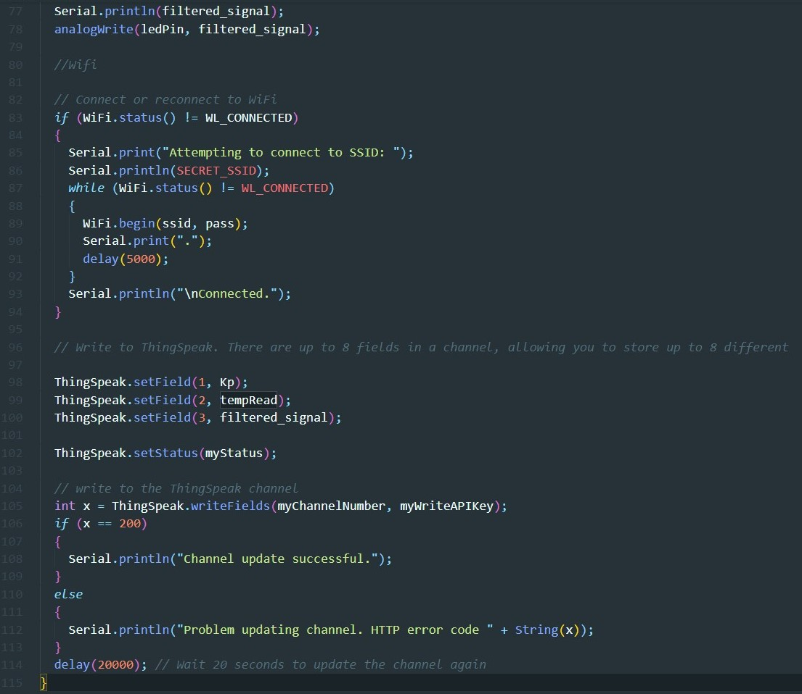
Figure 20: Arduino Program
Read data from MatLab
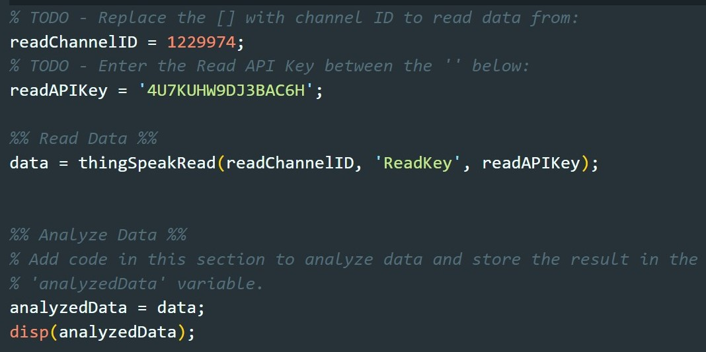
Figure 21: Retrieving Data from ThingSpeak in MatLab
Results
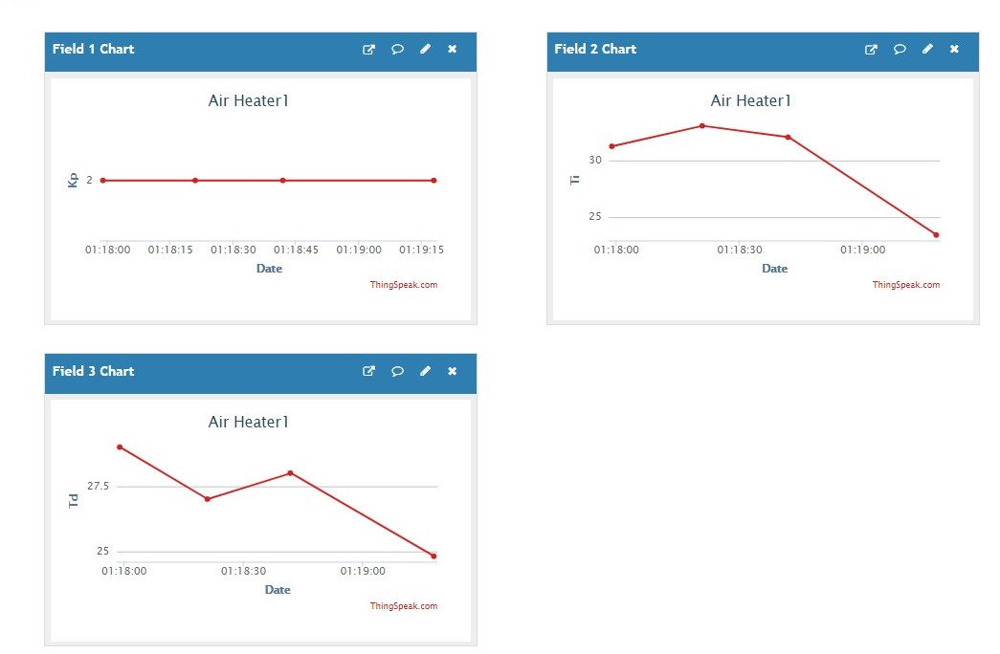
Figure 21:DashBoard
Conclusion
In this project, we have learnt how to implement PID controller and Low Pass filter in Arduino making Library. We have learnt how to gather real time data using USB DAQ 6008 and then process it in Arduino and send it to the Cloud.
And Moreover, how to monitor and analyze the data after retrieving data from cloud. gets connected to the server and save data.